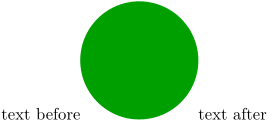

Contents
Summary
The command \MPdrawing is used for Metapost inline graphics.
Settings
Description
Similar to the environment \startMPdrawing.
It was introduced in 2010 to reduce needed calls with lua. Source: https://mailman.ntg.nl/archives/list/ntg-context@ntg.nl/message/AIAWMGBFQQ5QPKNPOPDKFE4U3P4DZJDY/
With \startMPdrawing :
-
\startluacode context.startMPdrawing() context("fill fullcircle scaled 2cm withcolor darkyellow;") context.stopMPdrawing() context("text before") context.MPdrawingdonetrue() context.getMPdrawing() context("text after") \stopluacode
-

Reminder: we call up the drawing with \getMPdrawing, but first we have to inform the compiler that our METAPOST drawing is completed with \MPdrawingdonetrue.
With \MPdrawing :
-
\startluacode context.MPdrawing("fill fullcircle scaled 2cm withcolor darkgreen;") context("text before") context.MPdrawingdonetrue() context.getMPdrawing() context("text after") \stopluacode
- 